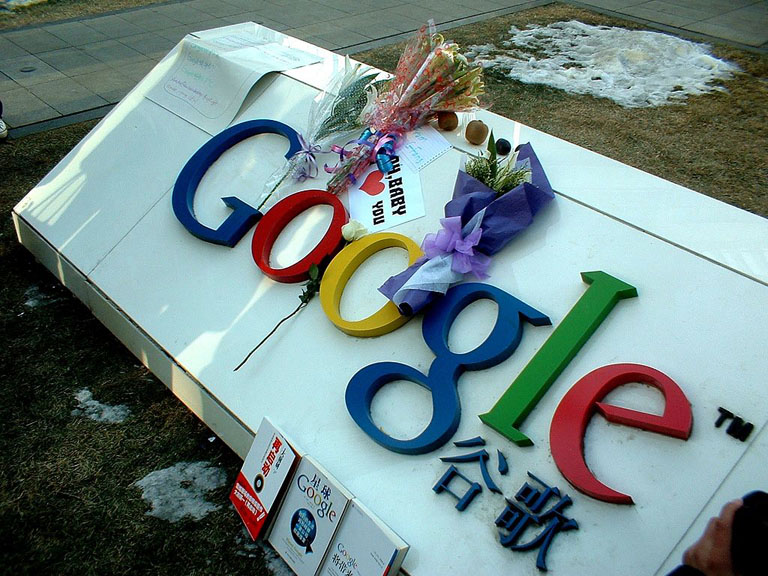

老杨急就章系列（19）
一 块 钱
《深度分析|为什么我们不能访问谷歌》这篇文章是7月25日晚上发到微信朋友圈的。头两天基本没啥反应。这本在意料之中。在这个图片和小视频的快餐时代，谁会有兴趣读一篇三万五千字的超级长文呢。
没想到从7月27号下午开始，阅读次数突然增加。7月28日晚就冲到了十万加。这很让我吃惊。这篇文章因为涉及诸多敏感话题，不能发微博也无不能用微信公众号推送，更不可能做推广，它的传播全靠热心的读者接力转发。7月29日晚，阅读量冲到20万次。7月30日阅读量再次加速，晚上7点就达到了37万次。按这个加速趋势，如果再不屏蔽，这篇文章很快就会刷爆朋友圈。意料之中的，7月30日19点左右
，有关部门将此文紧急屏蔽。
虽然原文链接被屏蔽了，但是根据谷歌搜索的结果，还有很多人继续在博客、Facebook以及海外的论坛上转发。有的热心读者甚至下载全文转为PDF，然后通过邮箱群发给好友。要是全算下来的话，估计这五天的总阅读量在40万次以上，创下了我个人单篇文章的阅读量新纪录。对这个结果我感到很欣慰。
为了写好此文，2015年在新加坡我放弃了春节游玩，很多个夜晚都打字到深夜。接下来一年多数易其稿，写得非常艰苦。这篇文章在删减之前曾经长达四万字，是我个人有史以来最长的一篇文章，可算一个短书稿了。
此文如此受欢迎，应该是它引起了大家的共鸣。中国的互联网基本只能算是本国的局域网，谷歌、Facebook和YouTube等数百家大型网站都无法访问，老百姓怨声载道。我这篇长文可能是互联网上关于谷歌撤出中国叙述最为详尽的一篇，它全景式再现了谷歌事件的真实面貌，驳斥了所谓的“为人民屏蔽互联网”的谎言，指出既得利益集团以及政府高级官员假公济私才是谷歌等世界知名网站被封锁的真正原因。
因为这篇长文，这两天我的公众号增加了近一千个新订户。我的个人微信也爆了，两天就多了近八百位新朋友，加到我手软。我在这里表示歉意，有些新朋友打招呼我没回，实在是忙不过来。根据简短的聊天，这篇文章的读者群分布十分广泛，从打工仔、中学生、大学生到博士后，从小县城到香港台湾，从中国大陆到欧美各国。此文也惊动了谷歌大中华区的高管，还有海外的出版商表达了出版的意愿。
很多朋友还用微信和支付宝打赏。收到红包一百多个吧，记不清了。我再次对诸位表示感谢。解释一下，我并不是缺这点钱。在互联网时代，我一直信奉“传播无罪，盗版有理”。从十年前开始，我就放弃了自己的全部版权，我的所有作品，包括摄影、文字和纪录影片，全都免费上线，读者个人可以自由阅读和下载（公司用途另谈）。街头耍刀，看官赏钱，此事自古如此。我觉得这也应该是当代作家（艺术家）在互联网时代应有的生存方式。
因为这篇文章涉及诸多敏感话题，所以有不少读者在点赞的同时还表达了对我个人安全的担心。目前的中国毕竟不是一个可以自由说话的国度。有一位微博粉丝的留言是这样写的：
“在格隆汇上拜读了阁下这篇文章，写得很客观、很详实，很赞！几点疑惑：1/这篇文章真的成为了舆情监控的盲点？到目前还未被封杀。2、既然您也知道秘密行动一直在进行，是什么让您有这么大的勇气公开发表如此敏感的文字？3、最后我想印证一下自己的判断，作者并不反对GCD执政，只是将事实呈现，对吗？”
这位粉丝的留言很有代表性。昨天我在微博上是这么回答的：“1，此文刚才已被屏蔽。是他们工作不认真，让这篇文章漏网了；2，我十多年来都是实名发表文章。本人只写字不参加任何活动，应该没有问题；3，
我不反对任何党执政，包括共产党。但是党派要允许批评意见。我就写了这篇文章批评其互联网政策。四处上网受阻，我很生气，这是我写作的主要原因。客观上也利于其他朋友吧。”
还补充几句。我有一个习惯，每当心里想不通的时候，我喜欢用笔来梳理一下自己。写谷歌这篇文章也是因为自己长期以来心里的疑问。在中国的互联网管理上，某些人为啥总是坚持秘密封杀（暗杀）才是治国之本，就像封杀谷歌或者昨天封杀我的长文那样？法律应该是公开的。如果政府觉得哪些东西必须屏蔽，它应该站出来和老百姓说清楚。讲道理要说具体。一句“依法治国”就秘密干掉别人，不予解释也不予上诉，哪位律师朋友能告诉我这是一种什么新型法律？
人人生而自由。思想应无疆界。作家的笔也当百无禁忌。欢迎任何人举报我违法写作、恶意中伤或者造谣生事。鄙人不介意与任何人在法庭上过招。说到底，我们应该倡导一个讲道理而不是讲强权的世界。这就是我公开发表文章的底气。
没有人和钱有仇，收到红包是一件让人高兴的事。有的读者读到一半就忍不住发红包，一小时后读完又来发第二个。还有个外资公司的读者一口气连发了三个200元红包（微信红包一次最多只能发200元）。不过
，在所有的红包里让我感动的并不是这些200元的大红包，而是诸多五块十块的小红包，有几个写着这样的留言：学生党一点心意。最让我感动的是昨天晚上一个最小的红包，里面只有一块钱，留言是：我失业了，但我必须上来为你的文章手动点赞。
谢谢你们。Thank all of you.
杨飞，
2016/7/31，长沙
PS，
昨晚发这篇短文到朋友圈，半小时就被屏蔽了。我实在没想通。哪位读者能告诉我，这篇短文违法之处到底何在？好吧好吧，我发张图片行不。

关注老杨作品：
1，杨飞摄影 www.midphoto.com
2，微信：yangfei789288
3，微信公众号：长沙杨飞
4，新浪微博@长沙杨飞
5，推特Twitter@feiyang17
6，Facebook：yangfei999999@hotmail.com